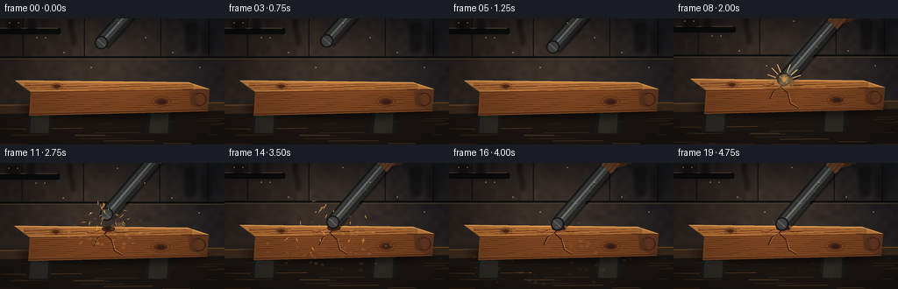
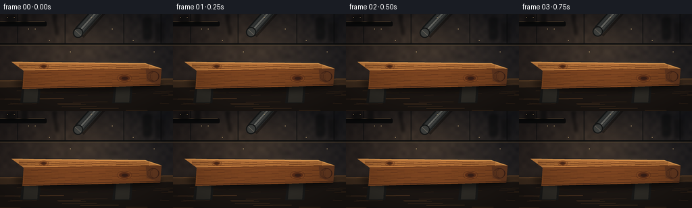

CODING AGENTS AS PIXEL WORLD MODELS
traex/GPT-5.6-Sol · material_0015
点击播放 · 原生 RGB 像素
逐轮保存的候选
回放视频、检查图与代码变化。
每份候选均可单独播放。实际图片检查记录在下方工具轨迹中。
候选 01播放与检查图
点击播放 · 原生 RGB 像素


展开代码变化
--- 上一保存版本
+++ 本次保存版本
@@ -0,0 +1,298 @@
+from pathlib import Path
+import math
+import numpy as np
+from PIL import Image, ImageDraw, ImageFilter
+import artifact_io
+
+# Text-to-video procedural rendering: all geometry, textures and movement are synthesized here.
+W, H, N = 256, 144, 20
+S = 4 # antialiasing supersampling
+PAD = 7
+CW, CH = W + 2*PAD, H + 2*PAD
+rng = np.random.default_rng(4152026)
+
+# Static fine texture keeps the workshop natural rather than flat/cartoon-like.
+yy, xx = np.mgrid[0:CH*S, 0:CW*S]
+base_noise = rng.normal(0, 1, (CH*S, CW*S))
+# Low-frequency mottling made without external assets.
+small = Image.fromarray(np.uint8(np.clip(128 + rng.normal(0, 25, (26, 45)), 0, 255)))
+low_noise = np.asarray(small.resize((CW*S, CH*S), Image.Resampling.BICUBIC), dtype=np.float32) - 128
+
+def sc(v): return int(round(v*S))
+def P(points): return [(sc(x), sc(y)) for x,y in points]
+def box(b): return tuple(sc(v) for v in b)
+def shifted(points, dx=0, dy=0): return [(x+dx, y+dy) for x,y in points]
+
+def polygon(draw, pts, fill, **kw): draw.polygon(P(pts), fill=fill, **kw)
+def line(draw, pts, fill, width=1, **kw): draw.line(P(pts), fill=fill, width=max(1,sc(width)), **kw)
+def ellipse(draw, b, fill, **kw): draw.ellipse(box(b), fill=fill, **kw)
+def rounded(draw, b, radius, fill, **kw): draw.rounded_rectangle(box(b), radius=sc(radius), fill=fill, **kw)
+
+def make_background():
+ # Dark warm workshop gradient with cool upper corners and amber bench light.
+ arr = np.zeros((CH*S, CW*S, 3), dtype=np.float32)
+ Y = yy/(CH*S-1); X = xx/(CW*S-1)
+ arr[:,:,0] = 25 + 20*Y + 5*(1-X)
+ arr[:,:,1] = 27 + 15*Y
+ arr[:,:,2] = 29 + 10*Y + 4*X
+ glow = np.exp(-(((X-.47)/.48)**2 + ((Y-.34)/.52)**2)*2.0)
+ arr += glow[:,:,None]*np.array([24,18,10])[None,None,:]
+ arr += low_noise[:,:,None]*np.array([.10,.085,.065])[None,None,:]
+ arr += base_noise[:,:,None]*0.75
+ im = Image.fromarray(np.uint8(np.clip(arr,0,255)), 'RGB').convert('RGBA')
+ d = ImageDraw.Draw(im,'RGBA')
+ # Concrete/steel wall divisions, distant shelf, and intentionally soft tool silhouettes.
+ line(d, [(0,51),(CW,51)], (12,14,15,145), 2)
+ line(d, [(0,53),(CW,53)], (72,62,48,40), 1)
+ for x in (33, 103, 190, 245):
+ line(d, [(x,0),(x,51)], (13,15,17,72), 1)
+ rounded(d,(4,18,76,25),2,(12,13,14,160))
+ line(d,[(7,18),(73,18)],(91,75,55,45),1)
+ # blurred background items
+ bg = Image.new('RGBA', im.size, (0,0,0,0)); bd=ImageDraw.Draw(bg,'RGBA')
+ rounded(bd,(17,8,30,19),2,(8,10,11,125)); rounded(bd,(39,5,47,20),2,(9,11,12,120))
+ rounded(bd,(219,12,231,45),3,(8,10,11,125)); rounded(bd,(237,20,250,47),2,(10,11,12,100))
+ line(bd,[(87,10),(91,38)],(8,9,10,125),4); ellipse(bd,(85,7,91,13),(11,12,12,130))
+ bg=bg.filter(ImageFilter.GaussianBlur(sc(1.8))); im.alpha_composite(bg)
+ # rear edge of workbench and front apron
+ d=ImageDraw.Draw(im,'RGBA')
+ polygon(d,[(0,106),(CW,103),(CW,CH),(0,CH)],(29,24,21,255))
+ polygon(d,[(0,105),(CW,102),(CW,112),(0,116)],(65,48,34,255))
+ line(d,[(0,106),(CW,103)],(135,96,58,105),1)
+ # scratches and stable wood grain on bench
+ for i in range(35):
+ y0=float(rng.uniform(110,CH)); x0=float(rng.uniform(0,CW)); ln=float(rng.uniform(12,65))
+ col=(115,78,45,int(rng.integers(15,35)))
+ line(d,[(x0,y0),(min(CW,x0+ln),y0+rng.uniform(-1,1))],col,float(rng.uniform(.25,.65)))
+ return im
+
+BACKGROUND = make_background()
+
+# Dots used for dust are deterministic and merely revealed/moved over time.
+dust_particles=[]
+for _ in range(46):
+ a=rng.uniform(0,2*math.pi); speed=rng.uniform(7,42)
+ dust_particles.append((a,speed,rng.uniform(0.7,2.5),rng.uniform(.1,1.0)))
+chips=[]
+for _ in range(24):
+ a=rng.uniform(math.pi*1.03, math.pi*1.97) # mostly upward/sideways
+ vx=math.cos(a)*rng.uniform(10,42)
+ vy=math.sin(a)*rng.uniform(12,45)-rng.uniform(5,17)
+ chips.append((vx,vy,rng.uniform(1.2,4.3),rng.uniform(-1,1)))
+
+# Impact happens at frame 8 (2.0 seconds).
+# Rod lower-tip y path: poised -> powerful acceleration -> compression -> rebound -> settle.
+tip_y = [34,33,34,32,34,39,49,64,78,70,61,64,69,72,74,75,76,76,76,76]
+tip_x = [123,123,124,124,125,126,127,129,131,131,130,130,131,131,131,131,131,131,131,131]
+# Subtle angle change, with axis extending up-right.
+angles = [-48,-48,-47,-48,-48,-48,-48,-48,-49,-49,-49,-49,-49,-49,-49,-49,-49,-49,-49,-49]
+
+# Camera shake following collision, in output pixels.
+shake=[(0,0)]*8 + [(2,-2),(-2,2),(1,-1),(-1,1)] + [(0,0)]*8
+
+def draw_supports(im):
+ d=ImageDraw.Draw(im,'RGBA')
+ # Two stout trestle blocks below the board establish mass/contact.
+ for x in (54,190):
+ polygon(d,[(x-13,102),(x+14,102),(x+11,139),(x-17,139)],(27,28,28,255))
+ polygon(d,[(x-10,105),(x+10,105),(x+8,138),(x-13,138)],(48,47,43,255))
+ line(d,[(x-8,108),(x+8,107)],(104,94,74,80),1)
+
+def wood_top_y(x):
+ # top edge under impact; used for grain clipping decisions
+ return 80.5 + .016*(x-25)
+
+def draw_board(im, frame):
+ d=ImageDraw.Draw(im,'RGBA')
+ impact=max(0, frame-7)
+ compression = 2.2 if frame==8 else (1.0 if frame==9 else 0)
+ # Soft contact shadows.
+ shadow=Image.new('RGBA',im.size,(0,0,0,0)); sd=ImageDraw.Draw(shadow,'RGBA')
+ ellipse(sd,(27,99,247,122),(0,0,0,130)); shadow=shadow.filter(ImageFilter.GaussianBlur(sc(4)))
+ im.alpha_composite(shadow)
+ d=ImageDraw.Draw(im,'RGBA')
+ # Thick timber plank perspective geometry.
+ polygon(d,[(24,78),(222,80),(246,88),(42,91)],(167,105,52,255))
+ polygon(d,[(42,91),(246,88),(244,113),(40,118)],(126,72,35,255))
+ polygon(d,[(222,80),(246,88),(244,113),(224,106)],(102,60,35,255))
+ # Warm top surface, bent locally during exact hit.
+ top_pts=[(24,77.6),(105,78.8),(123,79.2+compression*.25),(131,80+compression),
+ (141,79.7+compression*.35),(222,79.7),(246,87.5),(42,90.5)]
+ polygon(d,top_pts,(190,126,66,255))
+ line(d,[(25,78),(221,80),(245,88)],(240,181,104,135),1)
+ line(d,[(42,91),(245,88)],(80,42,23,160),1)
+ line(d,[(41,116),(244,111)],(63,36,25,155),1)
+ # Wood growth lines on top and front.
+ for k in range(12):
+ y0=81.0+k*.63
+ pts=[]
+ for x in range(35,232,12):
+ yv=y0 + .45*math.sin(x*.10+k*1.4) + .006*(x-35)
+ pts.append((x,yv))
+ line(d,pts,(103,58,29,95),.48)
+ for k in range(10):
+ y0=94+k*2.05
+ pts=[]
+ for x in range(43,240,10):
+ yv=y0 + .55*math.sin(x*.075+k*.7) - .015*(x-43)
+ pts.append((x,yv))
+ line(d,pts,(72,39,23,80),.55)
+ # Knots and ring patterns make material unmistakably wooden.
+ ellipse(d,(66,82.1,77,87),(111,62,31,125)); ellipse(d,(68,83,75,86.2),(71,39,24,150))
+ ellipse(d,(64.5,80.8,79,88.3),None,outline=(92,48,25,95),width=sc(.55))
+ ellipse(d,(183,98,199,106),(86,45,25,130)); ellipse(d,(187,100,196,104.5),(53,30,23,150))
+ ellipse(d,(180,96,202,108),None,outline=(75,39,23,100),width=sc(.6))
+ # End grain rings.
+ for r in (3,6,9):
+ ellipse(d,(231-r*.7,93-r*.15,241+r*.16,106+r*.1),None,outline=(62,35,25,75),width=sc(.55))
+ # Persistent crushed dent and branching crack after the strike.
+ if impact:
+ strength=min(1,impact/2)
+ ellipse(d,(124,77.8,139,84.7),(69,38,23,int(155*strength)))
+ ellipse(d,(127,78.5,136,82.8),(34,29,26,int(205*strength)))
+ line(d,[(130.5,82),(127,88),(119,92),(115,101)],(50,27,19,int(225*strength)),1.15)
+ line(d,[(128,88),(135,94),(138,106),(147,111)],(48,25,18,int(220*strength)),1.0)
+ line(d,[(135,83),(145,86),(154,85)],(64,31,19,int(195*strength)),.85)
+ line(d,[(122,83),(113,86),(107,85)],(67,34,21,int(165*strength)),.7)
+ # Bright fresh fibers at crack rims.
+ line(d,[(127.5,88),(120,92),(116,100)],(224,158,88,int(105*strength)),.38)
+ line(d,[(136,94),(139,105),(147,110)],(211,139,73,int(85*strength)),.38)
+
+def rod_geometry(x,y,angle_deg, length=125, width=15):
+ a=math.radians(angle_deg)
+ # angle points from lower striking tip toward upper grip (right/up)
+ ux,uy=math.cos(a),math.sin(a); nx,ny=-uy,ux
+ lower=(x,y); upper=(x+ux*length,y+uy*length)
+ corners=[(lower[0]+nx*width/2,lower[1]+ny*width/2),
+ (upper[0]+nx*width/2,upper[1]+ny*width/2),
+ (upper[0]-nx*width/2,upper[1]-ny*width/2),
+ (lower[0]-nx*width/2,lower[1]-ny*width/2)]
+ return ux,uy,nx,ny,lower,upper,corners
+
+def paint_rod(layer, x,y,angle, alpha=255, blur=False, with_hand=True):
+ d=ImageDraw.Draw(layer,'RGBA')
+ ux,uy,nx,ny,lo,up,corners=rod_geometry(x,y,angle)
+ # Cast shadow offset on rod silhouette.
+ polygon(d,shifted(corners,2.2,3),(0,0,0,int(alpha*.34)))
+ # cylinder base
+ polygon(d,corners,(49,53,55,alpha))
+ # linear side bands convey round iron, not a flat bar.
+ bands=[(-.48,(21,24,25)),(-.28,(58,63,65)),(-.02,(111,116,115)),(.18,(71,76,77)),(.40,(31,34,35))]
+ width=15
+ for frac,col in bands:
+ # thin longitudinal strokes at cross-axis offsets
+ off=frac*width
+ p1=(lo[0]+nx*off+ux*1.5,lo[1]+ny*off+uy*1.5)
+ p2=(up[0]+nx*off,up[1]+ny*off)
+ line(d,[p1,p2],(*col,int(alpha*.95)),2.4 if frac==-0.02 else 2.0)
+ # Scratches / cold metallic glints.
+ for dist,side in ((31,-.08),(52,.16),(79,-.18),(97,.08)):
+ c=(lo[0]+ux*dist+nx*side*width,lo[1]+uy*dist+ny*side*width)
+ line(d,[(c[0]-nx*3,c[1]-ny*3),(c[0]+nx*3,c[1]+ny*3)],(181,183,174,int(alpha*.42)),.55)
+ # Rounded circular striking cap with bright lower rim.
+ cx=lo[0]-ux*.8; cy=lo[1]-uy*.8
+ ellipse(d,(cx-7.6,cy-7.6,cx+7.6,cy+7.6),(34,37,38,alpha))
+ # cap is foreshortened visually with curved nested highlight
+ ellipse(d,(cx-5.8,cy-5.8,cx+5.8,cy+5.8),(62,66,66,alpha))
+ line(d,[(cx+nx*5.8,cy+ny*5.8),(cx-nx*5.8,cy-ny*5.8)],(167,169,162,int(alpha*.50)),1.0)
+ ellipse(d,(cx-7.4,cy-7.4,cx+7.4,cy+7.4),None,outline=(13,15,16,int(alpha*.92)),width=sc(1.0))
+ # Brown leather work glove grips the upper portion; cuff/arm enters top-right.
+ if with_hand:
+ gx=lo[0]+ux*91; gy=lo[1]+uy*91
+ # only render if potentially on-screen
+ polygon(d,[(gx-5,gy-10),(gx+13,gy-9),(gx+27,gy-20),(gx+35,gy-13),(gx+17,gy+3),(gx+3,gy+6)],
+ (75,46,31,int(alpha*.98)))
+ polygon(d,[(gx+10,gy-8),(gx+30,gy-22),(gx+42,gy-19),(gx+22,gy+2)],(56,42,35,int(alpha*.97)))
+ # wrapped glove fingers
+ for off in (-5,-1,3,7):
+ px=gx+nx*off; py=gy+ny*off
+ line(d,[(px-ux*8,py-uy*8),(px+ux*7,py+uy*7)],(115,72,44,int(alpha*.95)),3.2)
+ line(d,[(gx-4,gy-4),(gx+10,gy+5)],(185,123,68,int(alpha*.38)),.8)
+ if blur:
+ return layer.filter(ImageFilter.GaussianBlur(sc(1.4)))
+ return layer
+
+def draw_motion_rod(im, frame):
+ # trailing silhouettes on only the high-speed downstroke, always behind the crisp current rod.
+ if 5 <= frame <= 8:
+ layer=Image.new('RGBA',im.size,(0,0,0,0))
+ current_y=tip_y[frame]
+ prev_y=tip_y[max(0,frame-1)]
+ for j,t in enumerate((.2,.45,.7)):
+ ty=current_y*(1-t)+prev_y*t
+ tx=tip_x[frame]*(1-t)+tip_x[max(0,frame-1)]*t
+ temp=Image.new('RGBA',im.size,(0,0,0,0))
+ paint_rod(temp,tx,ty,angles[frame],alpha=48-j*8,blur=False,with_hand=False)
+ layer=Image.alpha_composite(layer,temp)
+ layer=layer.filter(ImageFilter.GaussianBlur(sc(1.7)))
+ im.alpha_composite(layer)
+ rod=Image.new('RGBA',im.size,(0,0,0,0))
+ paint_rod(rod,tip_x[frame],tip_y[frame],angles[frame],255,False,True)
+ im.alpha_composite(rod)
+
+def draw_impact_fx(im, frame):
+ if frame < 8: return
+ d=ImageDraw.Draw(im,'RGBA'); age=(frame-8)/4.0
+ ox,oy=131,80
+ if frame==8:
+ # Very short-lived contact flash/stress lines, warm not explosive/fire-like.
+ glow=Image.new('RGBA',im.size,(0,0,0,0)); gd=ImageDraw.Draw(glow,'RGBA')
+ ellipse(gd,(ox-12,oy-10,ox+12,oy+11),(255,205,125,60))
+ glow=glow.filter(ImageFilter.GaussianBlur(sc(5))); im.alpha_composite(glow)
+ d=ImageDraw.Draw(im,'RGBA')
+ for a in (-160,-134,-112,-69,-40,-18):
+ r1,r2=10,20
+ line(d,[(ox+math.cos(math.radians(a))*r1,oy+math.sin(math.radians(a))*r1),
+ (ox+math.cos(math.radians(a))*r2,oy+math.sin(math.radians(a))*r2)],(242,194,119,205),1)
+ # Wood splinters: ballistic, visible strongest in first second.
+ if age < 1.7:
+ fade=int(255*max(0,1-age/1.7))
+ for i,(vx,vy,sz,rot) in enumerate(chips):
+ t=age + i*.004
+ px=ox+vx*t; py=oy+vy*t+22*t*t
+ ang=math.atan2(vy+44*t,vx)+rot
+ ux,uy=math.cos(ang),math.sin(ang); nx,ny=-uy,ux
+ polygon(d,[(px-ux*sz,py-uy*sz),(px+ux*sz,py+uy*sz),(px+nx*.8,py+ny*.8)],
+ (211,144+int(i%3)*10,76,fade))
+ # Airborne sawdust cloud expands and falls; separately blurred and sharp motes.
+ cloud=Image.new('RGBA',im.size,(0,0,0,0)); cd=ImageDraw.Draw(cloud,'RGBA')
+ fade=max(0,1-age/3.1)
+ if fade>0:
+ for i,(a,speed,r,phase) in enumerate(dust_particles):
+ t=age
+ px=ox+math.cos(a)*speed*(.35+t) + math.sin(i)*2
+ py=oy+math.sin(a)*speed*(.20+t*.52)+9*t*t
+ al=int((38+55*phase)*fade)
+ ellipse(cd,(px-r,py-r*.65,px+r,py+r*.65),(201,151,92,al))
+ haze=cloud.filter(ImageFilter.GaussianBlur(sc(3.4)))
+ im.alpha_composite(haze); im.alpha_composite(cloud)
+
+def render(frame):
+ im=BACKGROUND.copy()
+ draw_supports(im)
+ draw_board(im,frame)
+ draw_motion_rod(im,frame)
+ draw_impact_fx(im,frame)
+ # Small floating ambient dust caught by the overhead light.
+ amb=ImageDraw.Draw(im,'RGBA')
+ for i in range(10):
+ x=18+(i*31)%238; y=12+(i*17)%68
+ pulse=30+int(10*math.sin(frame*.25+i))
+ ellipse(amb,(x-.45,y-.45,x+.45,y+.45),(207,180,130,pulse))
+ # Resize first, then crop with whole-camera shake. Large padded render prevents exposed edges.
+ im=im.convert('RGB').resize((CW,CH),Image.Resampling.LANCZOS)
+ sx,sy=shake[frame]
+ im=im.crop((PAD-sx,PAD-sy,PAD-sx+W,PAD-sy+H))
+ # Cinematic vignette, stable over time.
+ arr=np.asarray(im,dtype=np.float32)
+ Y,X=np.mgrid[0:H,0:W]; dx=(X-W/2)/(W/2); dy=(Y-H/2)/(H/2)
+ vig=np.clip(1-0.22*(dx*dx+dy*dy),.69,1.0)
+ arr*=vig[:,:,None]
+ # slight warm grade and preserved metallic coolness
+ arr[:,:,0]*=1.035; arr[:,:,2]*=.96
+ return np.uint8(np.clip(arr,0,255))
+
+frames=np.stack([render(i) for i in range(N)],axis=0)
+assert frames.shape==(20,144,256,3) and frames.dtype==np.uint8
+artifact_io.save(frames, Path(__file__).resolve().parent)
+print('saved',frames.shape,frames.dtype,'range',int(frames.min()),int(frames.max()))
可观测工具轨迹
实际执行的命令与返回图片。
命令 1exit 0
/bin/bash -lc "cat prompt.txt && printf '\\n--- GENERATION_RULES.md ---\\n' && cat GENERATION_RULES.md"
命令 2exit 0
/bin/bash -lc "cat task_spec.json && printf '\\n--- files ---\\n' && find . -maxdepth 2 -type f -printf '%p %s bytes\\n' | sort"
命令 3exit 0
/bin/bash -lc "command -v ffmpeg || true; command -v python3 || true; python3 - <<'PY' mods=['numpy','PIL','cv2','imageio','scipy'] for m in mods: try: x=__import__(m); print(m,'OK',getattr(x,'__version__','')) except Exception as e: print(m,'NO',e) PY"
命令 4exit 0
/bin/bash -lc 'cat artifact_io.py'
命令 5exit 0
/bin/bash -lc "cat > generate.py <<'PY'
from pathlib import Path
import math
import numpy as np
from PIL import Image, ImageDraw, ImageFilter
import artifact_io
# Text-to-video procedural rendering: all geometry, textures and movement are synthesized here.
W, H, N = 256, 144, 20
S = 4 # antialiasing supersampling
PAD = 7
CW, CH = W + 2*PAD, H + 2*PAD
rng = np.random.default_rng(4152026)
# Static fine texture keeps the workshop natural rather than flat/cartoon-like.
yy, xx = np.mgrid[0:CH*S, 0:CW*S]
base_noise = rng.normal(0, 1, (CH*S, CW*S))
# Low-frequency mottling made without external assets.
small = Image.fromarray(np.uint8(np.clip(128 + rng.normal(0, 25, (26, 45)), 0, 255)))
low_noise = np.asarray(small.resize((CW*S, CH*S), Image.Resampling.BICUBIC), dtype=np.float32) - 128
def sc(v): return int(round(v*S))
def P(points): return [(sc(x), sc(y)) for x,y in points]
def box(b): return tuple(sc(v) for v in b)
def shifted(points, dx=0, dy=0): return [(x+dx, y+dy) for x,y in points]
def polygon(draw, pts, fill, **kw): draw.polygon(P(pts), fill=fill, **kw)
def line(draw, pts, fill, width=1, **kw): draw.line(P(pts), fill=fill, width=max(1,sc(width)), **kw)
def ellipse(draw, b, fill, **kw): draw.ellipse(box(b), fill=fill, **kw)
def rounded(draw, b, radius, fill, **kw): draw.rounded_rectangle(box(b), radius=sc(radius), fill=fill, **kw)
def make_background():
# Dark warm workshop gradient with cool upper corners and amber bench light.
arr = np.zeros((CH*S, CW*S, 3), dtype=np.float32)
Y = yy/(CH*S-1); X = xx/(CW*S-1)
arr[:,:,0] = 25 + 20*Y + 5*(1-X)
arr[:,:,1] = 27 + 15*Y
arr[:,:,2] = 29 + 10*Y + 4*X
glow = np.exp(-(((X-.47)/.48)**2 + ((Y-.34)/.52)**2)*2.0)
arr += glow[:,:,None]*np.array([24,18,10])[None,None,:]
arr += low_noise[:,:,None]*np.array([.10,.085,.065])[None,None,:]
arr += base_noise[:,:,None]*0.75
im = Image.fromarray(np.uint8(np.clip(arr,0,255)), 'RGB').convert('RGBA')
d = ImageDraw.Draw(im,'RGBA')
# Concrete/steel wall divisions, distant shelf, and intentionally soft tool silhouettes.
line(d, [(0,51),(CW,51)], (12,14,15,145), 2)
line(d, [(0,53),(CW,53)], (72,62,48,40), 1)
for x in (33, 103, 190, 245):
line(d, [(x,0),(x,51)], (13,15,17,72), 1)
rounded(d,(4,18,76,25),2,(12,13,14,160))
line(d,[(7,18),(73,18)],(91,75,55,45),1)
# blurred background items
bg = Image.new('RGBA', im.size, (0,0,0,0)); bd=ImageDraw.Draw(bg,'RGBA')
rounded(bd,(17,8,30,19),2,(8,10,11,125)); rounded(bd,(39,5,47,20),2,(9,11,12,120))
rounded(bd,(219,12,231,45),3,(8,10,11,125)); rounded(bd,(237,20,250,47),2,(10,11,12,100))
line(bd,[(87,10),(91,38)],(8,9,10,125),4); ellipse(bd,(85,7,91,13),(11,12,12,130))
bg=bg.filter(ImageFilter.GaussianBlur(sc(1.8))); im.alpha_composite(bg)
# rear edge of workbench and front apron
d=ImageDraw.Draw(im,'RGBA')
polygon(d,[(0,106),(CW,103),(CW,CH),(0,CH)],(29,24,21,255))
polygon(d,[(0,105),(CW,102),(CW,112),(0,116)],(65,48,34,255))
line(d,[(0,106),(CW,103)],(135,96,58,105),1)
# scratches and stable wood grain on bench
for i in range(35):
y0=float(rng.uniform(110,CH)); x0=float(rng.uniform(0,CW)); ln=float(rng.uniform(12,65))
col=(115,78,45,int(rng.integers(15,35)))
line(d,[(x0,y0),(min(CW,x0+ln),y0+rng.uniform(-1,1))],col,float(rng.uniform(.25,.65)))
return im
BACKGROUND = make_background()
# Dots used for dust are deterministic and merely revealed/moved over time.
dust_particles=[]
for _ in range(46):
a=rng.uniform(0,2*math.pi); speed=rng.uniform(7,42)
dust_particles.append((a,speed,rng.uniform(0.7,2.5),rng.uniform(.1,1.0)))
chips=[]
for _ in range(24):
a=rng.uniform(math.pi*1.03, math.pi*1.97) # mostly upward/sideways
vx=math.cos(a)*rng.uniform(10,42)
vy=math.sin(a)*rng.uniform(12,45)-rng.uniform(5,17)
chips.append((vx,vy,rng.uniform(1.2,4.3),rng.uniform(-1,1)))
# Impact happens at frame 8 (2.0 seconds).
# Rod lower-tip y path: poised -> powerful acceleration -> compression -> rebound -> settle.
tip_y = [34,33,34,32,34,39,49,64,78,70,61,64,69,72,74,75,76,76,76,76]
tip_x = [123,123,124,124,125,126,127,129,131,131,130,130,131,131,131,131,131,131,131,131]
# Subtle angle change, with axis extending up-right.
angles = [-48,-48,-47,-48,-48,-48,-48,-48,-49,-49,-49,-49,-49,-49,-49,-49,-49,-49,-49,-49]
# Camera shake following collision, in output pixels.
shake=[(0,0)]*8 + [(2,-2),(-2,2),(1,-1),(-1,1)] + [(0,0)]*8
def draw_supports(im):
d=ImageDraw.Draw(im,'RGBA')
# Two stout trestle blocks below the board establish mass/contact.
for x in (54,190):
polygon(d,[(x-13,102),(x+14,102),(x+11,139),(x-17,139)],(27,28,28,255))
polygon(d,[(x-10,105),(x+10,105),(x+8,138),(x-13,138)],(48,47,43,255))
line(d,[(x-8,108),(x+8,107)],(104,94,74,80),1)
def wood_top_y(x):
# top edge under impact; used for grain clipping decisions
return 80.5 + .016*(x-25)
def draw_board(im, frame):
d=ImageDraw.Draw(im,'RGBA')
impact=max(0, frame-7)
compression = 2.2 if frame==8 else (1.0 if frame==9 else 0)
# Soft contact shadows.
shadow=Image.new('RGBA',im.size,(0,0,0,0)); sd=ImageDraw.Draw(shadow,'RGBA')
ellipse(sd,(27,99,247,122),(0,0,0,130)); shadow=shadow.filter(ImageFilter.GaussianBlur(sc(4)))
im.alpha_composite(shadow)
d=ImageDraw.Draw(im,'RGBA')
# Thick timber plank perspective geometry.
polygon(d,[(24,78),(222,80),(246,88),(42,91)],(167,105,52,255))
polygon(d,[(42,91),(246,88),(244,113),(40,118)],(126,72,35,255))
polygon(d,[(222,80),(246,88),(244,113),(224,106)],(102,60,35,255))
# Warm top surface, bent locally during exact hit.
top_pts=[(24,77.6),(105,78.8),(123,79.2+compression*.25),(131,80+compression),
(141,79.7+compression*.35),(222,79.7),(246,87.5),(42,90.5)]
polygon(d,top_pts,(190,126,66,255))
line(d,[(25,78),(221,80),(245,88)],(240,181,104,135),1)
line(d,[(42,91),(245,88)],(80,42,23,160),1)
line(d,[(41,116),(244,111)],(63,36,25,155),1)
# Wood growth lines on top and front.
for k in range(12):
y0=81.0+k*.63
pts=[]
for x in range(35,232,12):
yv=y0 + .45*math.sin(x*.10+k*1.4) + .006*(x-35)
pts.append((x,yv))
line(d,pts,(103,58,29,95),.48)
for k in range(10):
y0=94+k*2.05
pts=[]
for x in range(43,240,10):
yv=y0 + .55*math.sin(x*.075+k*.7) - .015*(x-43)
pts.append((x,yv))
line(d,pts,(72,39,23,80),.55)
# Knots and ring patterns make material unmistakably wooden.
ellipse(d,(66,82.1,77,87),(111,62,31,125)); ellipse(d,(68,83,75,86.2),(71,39,24,150))
ellipse(d,(64.5,80.8,79,88.3),None,outline=(92,48,25,95),width=sc(.55))
ellipse(d,(183,98,199,106),(86,45,25,130)); ellipse(d,(187,100,196,104.5),(53,30,23,150))
ellipse(d,(180,96,202,108),None,outline=(75,39,23,100),width=sc(.6))
# End grain rings.
for r in (3,6,9):
ellipse(d,(231-r*.7,93-r*.15,241+r*.16,106+r*.1),None,outline=(62,35,25,75),width=sc(.55))
# Persistent crushed dent and branching crack after the strike.
if impact:
strength=min(1,impact/2)
ellipse(d,(124,77.8,139,84.7),(69,38,23,int(155*strength)))
ellipse(d,(127,78.5,136,82.8),(34,29,26,int(205*strength)))
line(d,[(130.5,82),(127,88),(119,92),(115,101)],(50,27,19,int(225*strength)),1.15)
line(d,[(128,88),(135,94),(138,106),(147,111)],(48,25,18,int(220*strength)),1.0)
line(d,[(135,83),(145,86),(154,85)],(64,31,19,int(195*strength)),.85)
line(d,[(122,83),(113,86),(107,85)],(67,34,21,int(165*strength)),.7)
# Bright fresh fibers at crack rims.
line(d,[(127.5,88),(120,92),(116,100)],(224,158,88,int(105*strength)),.38)
line(d,[(136,94),(139,105),(147,110)],(211,139,73,int(85*strength)),.38)
def rod_geometry(x,y,angle_deg, length=125, width=15):
a=math.radians(angle_deg)
# angle points from lower striking tip toward upper grip (right/up)
ux,uy=math.cos(a),math.sin(a); nx,ny=-uy,ux
lower=(x,y); upper=(x+ux*length,y+uy*length)
corners=[(lower[0]+nx*width/2,lower[1]+ny*width/2),
(upper[0]+nx*width/2,upper[1]+ny*width/2),
(upper[0]-nx*width/2,upper[1]-ny*width/2),
(lower[0]-nx*width/2,lower[1]-ny*width/2)]
return ux,uy,nx,ny,lower,upper,corners
def paint_rod(layer, x,y,angle, alpha=255, blur=False, with_hand=True):
d=ImageDraw.Draw(layer,'RGBA')
ux,uy,nx,ny,lo,up,corners=rod_geometry(x,y,angle)
# Cast shadow offset on rod silhouette.
polygon(d,shifted(corners,2.2,3),(0,0,0,int(alpha*.34)))
# cylinder base
polygon(d,corners,(49,53,55,alpha))
# linear side bands convey round iron, not a flat bar.
bands=[(-.48,(21,24,25)),(-.28,(58,63,65)),(-.02,(111,116,115)),(.18,(71,76,77)),(.40,(31,34,35))]
width=15
for frac,col in bands:
# thin longitudinal strokes at cross-axis offsets
off=frac*width
p1=(lo[0]+nx*off+ux*1.5,lo[1]+ny*off+uy*1.5)
p2=(up[0]+nx*off,up[1]+ny*off)
line(d,[p1,p2],(*col,int(alpha*.95)),2.4 if frac==-0.02 else 2.0)
# Scratches / cold metallic glints.
for dist,side in ((31,-.08),(52,.16),(79,-.18),(97,.08)):
c=(lo[0]+ux*dist+nx*side*width,lo[1]+uy*dist+ny*side*width)
line(d,[(c[0]-nx*3,c[1]-ny*3),(c[0]+nx*3,c[1]+ny*3)],(181,183,174,int(alpha*.42)),.55)
# Rounded circular striking cap with bright lower rim.
cx=lo[0]-ux*.8; cy=lo[1]-uy*.8
ellipse(d,(cx-7.6,cy-7.6,cx+7.6,cy+7.6),(34,37,38,alpha))
# cap is foreshortened visually with curved nested highlight
ellipse(d,(cx-5.8,cy-5.8,cx+5.8,cy+5.8),(62,66,66,alpha))
line(d,[(cx+nx*5.8,cy+ny*5.8),(cx-nx*5.8,cy-ny*5.8)],(167,169,162,int(alpha*.50)),1.0)
ellipse(d,(cx-7.4,cy-7.4,cx+7.4,cy+7.4),None,outline=(13,15,16,int(alpha*.92)),width=sc(1.0))
# Brown leather work glove grips the upper portion; cuff/arm enters top-right.
if with_hand:
gx=lo[0]+ux*91; gy=lo[1]+uy*91
# only render if potentially on-screen
polygon(d,[(gx-5,gy-10),(gx+13,gy-9),(gx+27,gy-20),(gx+35,gy-13),(gx+17,gy+3),(gx+3,gy+6)],
(75,46,31,int(alpha*.98)))
polygon(d,[(gx+10,gy-8),(gx+30,gy-22),(gx+42,gy-19),(gx+22,gy+2)],(56,42,35,int(alpha*.97)))
# wrapped glove fingers
for off in (-5,-1,3,7):
px=gx+nx*off; py=gy+ny*off
line(d,[(px-ux*8,py-uy*8),(px+ux*7,py+uy*7)],(115,72,44,int(alpha*.95)),3.2)
line(d,[(gx-4,gy-4),(gx+10,gy+5)],(185,123,68,int(alpha*.38)),.8)
if blur:
return layer.filter(ImageFilter.GaussianBlur(sc(1.4)))
return layer
def draw_motion_rod(im, frame):
# trailing silhouettes on only the high-speed downstroke, always behind the crisp current rod.
if 5 <= frame <= 8:
layer=Image.new('RGBA',im.size,(0,0,0,0))
current_y=tip_y[frame]
prev_y=tip_y[max(0,frame-1)]
for j,t in enumerate((.2,.45,.7)):
ty=current_y*(1-t)+prev_y*t
tx=tip_x[frame]*(1-t)+tip_x[max(0,frame-1)]*t
temp=Image.new('RGBA',im.size,(0,0,0,0))
paint_rod(temp,tx,ty,angles[frame],alpha=48-j*8,blur=False,with_hand=False)
layer=Image.alpha_composite(layer,temp)
layer=layer.filter(ImageFilter.GaussianBlur(sc(1.7)))
im.alpha_composite(layer)
rod=Image.new('RGBA',im.size,(0,0,0,0))
paint_rod(rod,tip_x[frame],tip_y[frame],angles[frame],255,False,True)
im.alpha_composite(rod)
def draw_impact_fx(im, frame):
if frame < 8: return
d=ImageDraw.Draw(im,'RGBA'); age=(frame-8)/4.0
ox,oy=131,80
if frame==8:
# Very short-lived contact flash/stress lines, warm not explosive/fire-like.
glow=Image.new('RGBA',im.size,(0,0,0,0)); gd=ImageDraw.Draw(glow,'RGBA')
ellipse(gd,(ox-12,oy-10,ox+12,oy+11),(255,205,125,60))
glow=glow.filter(ImageFilter.GaussianBlur(sc(5))); im.alpha_composite(glow)
d=ImageDraw.Draw(im,'RGBA')
for a in (-160,-134,-112,-69,-40,-18):
r1,r2=10,20
line(d,[(ox+math.cos(math.radians(a))*r1,oy+math.sin(math.radians(a))*r1),
(ox+math.cos(math.radians(a))*r2,oy+math.sin(math.radians(a))*r2)],(242,194,119,205),1)
# Wood splinters: ballistic, visible strongest in first second.
if age < 1.7:
fade=int(255*max(0,1-age/1.7))
for i,(vx,vy,sz,rot) in enumerate(chips):
t=age + i*.004
px=ox+vx*t; py=oy+vy*t+22*t*t
ang=math.atan2(vy+44*t,vx)+rot
ux,uy=math.cos(ang),math.sin(ang); nx,ny=-uy,ux
polygon(d,[(px-ux*sz,py-uy*sz),(px+ux*sz,py+uy*sz),(px+nx*.8,py+ny*.8)],
(211,144+int(i%3)*10,76,fade))
# Airborne sawdust cloud expands and falls; separately blurred and sharp motes.
cloud=Image.new('RGBA',im.size,(0,0,0,0)); cd=ImageDraw.Draw(cloud,'RGBA')
fade=max(0,1-age/3.1)
if fade>0:
for i,(a,speed,r,phase) in enumerate(dust_particles):
t=age
px=ox+math.cos(a)*speed*(.35+t) + math.sin(i)*2
py=oy+math.sin(a)*speed*(.20+t*.52)+9*t*t
al=int((38+55*phase)*fade)
ellipse(cd,(px-r,py-r*.65,px+r,py+r*.65),(201,151,92,al))
haze=cloud.filter(ImageFilter.GaussianBlur(sc(3.4)))
im.alpha_composite(haze); im.alpha_composite(cloud)
def render(frame):
im=BACKGROUND.copy()
draw_supports(im)
draw_board(im,frame)
draw_motion_rod(im,frame)
draw_impact_fx(im,frame)
# Small floating ambient dust caught by the overhead light.
amb=ImageDraw.Draw(im,'RGBA')
for i in range(10):
x=18+(i*31)%238; y=12+(i*17)%68
pulse=30+int(10*math.sin(frame*.25+i))
ellipse(amb,(x-.45,y-.45,x+.45,y+.45),(207,180,130,pulse))
# Resize first, then crop with whole-camera shake. Large padded render prevents exposed edges.
im=im.convert('RGB').resize((CW,CH),Image.Resampling.LANCZOS)
sx,sy=shake[frame]
im=im.crop((PAD-sx,PAD-sy,PAD-sx+W,PAD-sy+H))
# Cinematic vignette, stable over time.
arr=np.asarray(im,dtype=np.float32)
Y,X=np.mgrid[0:H,0:W]; dx=(X-W/2)/(W/2); dy=(Y-H/2)/(H/2)
vig=np.clip(1-0.22*(dx*dx+dy*dy),.69,1.0)
arr*=vig[:,:,None]
# slight warm grade and preserved metallic coolness
arr[:,:,0]*=1.035; arr[:,:,2]*=.96
return np.uint8(np.clip(arr,0,255))
frames=np.stack([render(i) for i in range(N)],axis=0)
assert frames.shape==(20,144,256,3) and frames.dtype==np.uint8
artifact_io.save(frames, Path(__file__).resolve().parent)
print('saved',frames.shape,frames.dtype,'range',int(frames.min()),int(frames.max()))
PY
python3 generate.py
ls -lh pixels.npz inspection.png transition_check.png index.html frames/00.png frames/08.png frames/19.png"命令 6exit 0
/bin/bash -lc "python3 - <<'PY'
import numpy as np
from PIL import Image
from pathlib import Path
p=np.load('pixels.npz')['pixels']
print('packed tensor:',p.shape,p.dtype)
ims=np.stack([np.asarray(Image.open(f'frames/{i:02d}.png').convert('RGB')) for i in range(20)])
print('frames:',ims.shape,ims.dtype)
d=np.mean(np.abs(np.diff(ims.astype(np.int16),axis=0)),axis=(1,2,3))
print('mean abs frame deltas:',np.round(d,2).tolist())
print('impact deltas f7->8/f8->9:',round(d[7],2),round(d[8],2))
print('unique consecutive frames:',all(np.any(ims[i]"'!=ims[i-1]) for i in range(1,20)))
repacked=((ims[:,:,:,0].astype(np.uint32)<<16)|(ims[:,:,:,1].astype(np.uint32)<<8)|ims[:,:,:,2]).transpose(1,2,0)
print('"'npz exact:',np.array_equal(repacked,p))
print('artifacts:',[(x,Path(x).stat().st_size) for x in ['pixels.npz','index.html','inspection.png','transition_check.png']])
PY"命令 7exit 0
/bin/bash -lc 'command -v chafa || command -v viu || command -v jp2 || command -v img2txt || true; git status --short 2>/dev/null || true'
保存候选 1 份；完成命令 7 次；可验证图片返回 0 张。原始 API 响应与完整日志保留在本地。